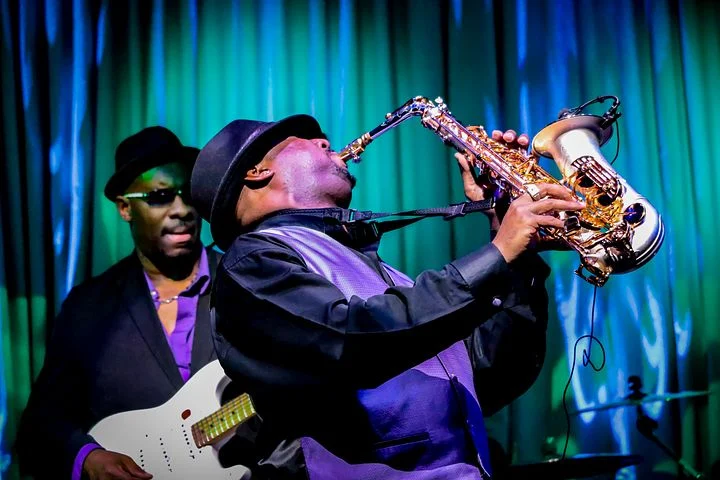
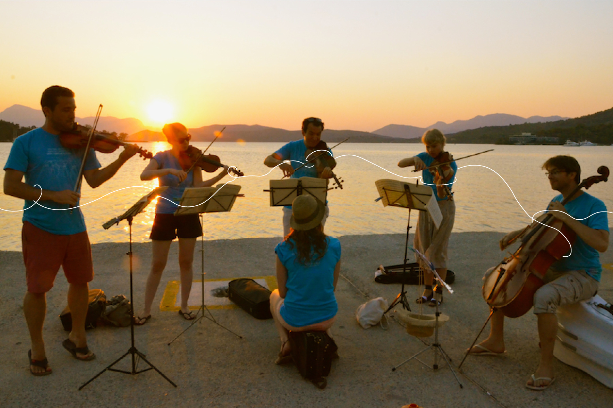

Events
-
April 27, 2026
Sunset Jazz on the Shore
Enjoy a smooth and soulful evening as local and traveling jazz musicians perform live on our oceanside lawn while the sun dips below the horizon. Guests are invited to relax with a glass of wine, mingle with fellow music lovers, and experience the rich cultural history of coastal jazz influences.
-
May 15, 2026
Seafarers Folk & Storytelling Night

This intimate cultural gathering celebrates traditional folk music and maritime storytelling. Talented folk musicians and local historians share sea shanties, acoustic performances, and captivating tales of the town’s seafaring past, creating an authentic coastal experience by candlelight in our historic parlor.
Contact us for more info about Seafarers Folk & Storytelling Night
-
June 6, 2026
Coastal Arts & Classical Evening
An elegant night featuring a live classical ensemble paired with a rotating exhibit of coastal artwork by regional artists. Guests stroll through curated art displays while enjoying refined chamber music inspired by the sea, making this event a perfect blend of cultural enrichment and seaside sophistication.
Contact us for reseervations to the Coastal Arts & Classical Evening